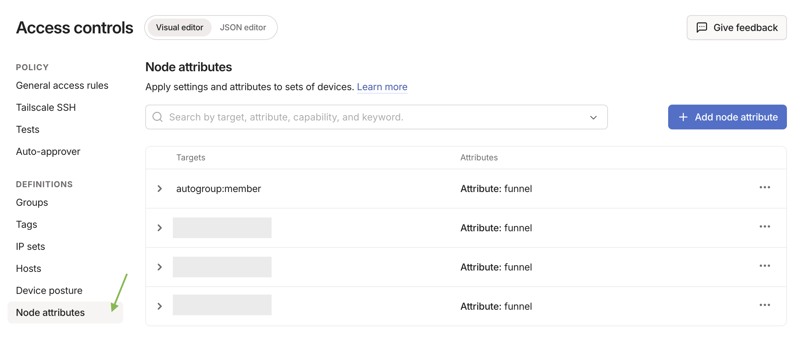

🌍 Exposer en toute sécurité : accès public avec Funnel
LibreFolio sur internet avec Tailscale Funnel, à une adresse HTTPS publique, sans ouvrir de port sur votre routeur :
- la configuration unique de Funnel et des ACL dans la console Tailscale ;
- le niveau 3 : une adresse pour LibreFolio, avec une commande sur le serveur ;
- le niveau 4 : une adresse par service, chacun avec son propre conteneur Docker.
Tailscale doit déjà être installé sur le serveur : pourquoi Tailscale, l’étape 0 (l’installation) et les niveaux privés 1 et 2 se trouvent dans Exposer en toute sécurité.
6040 est le port par défaut de LibreFolio : si vous définissez un autre PORT dans votre .env, utilisez ce nombre.
🔑 Activer Funnel et les ACL sur la console
Configuration unique, requise par les niveaux 3 et 4. Elle autorise Funnel dans les règles de contrôle d’accès (ACL) de l’ensemble de votre tailnet.
🔐 Avant de rendre le service public
Avec Funnel, n’importe qui sur internet peut ouvrir la page de connexion de LibreFolio. Créez d’abord votre propre compte : tant qu’aucun compte n’existe, n’importe qui peut s’inscrire, et le premier compte inscrit devient l’administrateur. Ensuite, une nouvelle instance ne laisse entrer les gens que par un lien d’invitation (l’Inscription est Sur invitation par défaut) : envoyez-en un à chaque personne. Une instance mise à jour depuis une version antérieure garde son mode : si l’Inscription dans les Paramètres Globaux est Ouverte, passez-la à Sur invitation, ou à Fermée si personne d’autre ne doit rejoindre (Qui peut s’inscrire).
Où : dans la console d’administration Tailscale, page Access Controls.
- Cliquez sur Add node attribute.
-
Remplissez le formulaire :
Champ Valeur Targets Les nœuds autorisés à utiliser Funnel. Nous suggérons tag:external_access(vous le donnerez aux conteneurs du niveau 4) ouautogroup:member(tous les appareils de votre compte).Attributes funnelNote Quelques mots sur la raison d’être de la règle. IP Pools, App, Capability, etc. Laissez-les vides ou à leurs valeurs par défaut.

Résultat : les nœuds listés peuvent activer Funnel. Cette règle n’est pas une clé d’authentification : les clés d’authentification (niveau 4) servent uniquement à enregistrer un nouvel appareil ou conteneur dans le tailnet.
📄 Afficher la configuration JSON complète des ACL pour activer Funnel
Où : dans le fichier de politique du tailnet, si vous préférez le modifier directement. Il active Funnel pour vos propres appareils et pour les conteneurs tagués tag:external_access :
{
// Declaration of authorized tags
"tagOwners": {
"tag:external_access": ["autogroup:admin"]
},
// Standard access rules
"acls": [
// Allows all nodes in your private network to communicate
{"action": "accept", "src": ["*"], "dst": ["*:*"]}
],
"ssh": [
{
"action": "check",
"src": ["autogroup:member"],
"dst": ["autogroup:self"],
"users": ["autogroup:nonroot", "root"]
}
],
// Enabling Funnel on specific nodes or tags
"nodeAttrs": [
{
"target": ["autogroup:member"],
"attr": ["funnel"]
},
{
"target": ["tag:external_access"],
"attr": ["funnel"]
}
]
}
🥈 Niveau 3 : adresse HTTPS publique avec Tailscale Funnel
Idéal pour une adresse publique, sans VPN sur le client. Funnel publie LibreFolio à l’adresse https://<server-name>.your-tailnet.ts.net, que n’importe qui ouvre sans installer Tailscale.
HTTPS est aussi ce qui vous permet d’installer LibreFolio comme application (PWA) sur votre téléphone.
Avant de commencer : effectuez la configuration de Funnel et des ACL sur la console.
graph LR
User["👤 Utilisateur (sans VPN)"] -->|Requête HTTPS| Funnel["☁️ Entrée Tailscale Funnel<br>(serveur public Tailscale)"]
Funnel -->|Tunnel WireGuard| Server["🖥️ Serveur local (tailscaled)<br>(100.a.b.c)"]
subgraph LAN ["Réseau local (LAN)"]
Server -->|Redirection locale| LibreFolio["📊 LibreFolio (port 6040)"]
Server -.->|"<font color='red'><b>Exposition impossible</b></font>"| Other["🔌 Autres services locaux (autres ports)"]
end
style LibreFolio fill:#d4edda,color:#1b1b1b,stroke:#28a745,stroke-width:2px;
style Other fill:#f8d7da,color:#1b1b1b,stroke:#dc3545,stroke-width:2px;
linkStyle 3 stroke:#dc3545,stroke-width:2px;▶️ Étape 1 : démarrer le Funnel sur le serveur
Où : sur le serveur, dans un terminal. Publiez le port local de LibreFolio :
Résultat : LibreFolio est servi à l’adresse https://<server-name>.your-tailnet.ts.net sur le port 443. --bg le maintient en fonctionnement après la fermeture du terminal ; tailscale funnel reset l’arrête.
- Aucune clé d’authentification : le serveur a déjà rejoint le tailnet à l’étape 0.
- Rien à configurer dans LibreFolio : Funnel envoie
X-Forwarded-Proto: https, donc avec la valeur par défautSESSION_COOKIE_SECURE=auto, le cookie de session est marquéSecure.neverne convient qu’à un proxy qui annonce HTTPS à un navigateur en HTTP simple, non chiffré.
✅ Étape 2 : approuver et attendre la propagation
La première fois, le terminal avertit que Funnel n’est pas encore autorisé pour ce nœud :
Funnel is enabled, but the list of allowed nodes in the tailnet policy file does not include the one you are using.
To give access to this node you can edit the tailnet policy file, or visit:
https://login.tailscale.com/f/funnel?node=xxxxxx
- Dans le navigateur : ouvrez le lien, connectez-vous à Tailscale et approuvez Funnel pour ce nœud.
- Dans le terminal du serveur : votre URL publique apparaît.
- Depuis un réseau externe : attendez quelques minutes que les enregistrements MagicDNS se propagent, puis ouvrez l’URL.
Pour vérifier le résultat : Vérification de la sécurité de la connexion.
⚠️ Limites : une machine a un seul nom public, partagé par chaque service qu’elle publie. Le niveau 4 donne à chaque service le sien.
🥇 Niveau 4 : Multi-Funnel avec sidecars Docker
Idéal pour les utilisateurs de Docker qui veulent une adresse publique par service. Chaque service reçoit un petit conteneur Tailscale (un sidecar), un nœud du tailnet à part entière avec sa propre adresse https://<name>.your-tailnet.ts.net. Un script de démarrage installe socat dans le sidecar, qui transmet le trafic de Funnel vers l’IP LAN statique du service.
Avant de commencer : effectuez la configuration de Funnel et des ACL sur la console.
🧰 Qu’est-ce que socat ?
socat (SOcket CAT) relaie les données entre deux connexions : il écoute sur un port à l’intérieur du conteneur Tailscale et transmet tout au port réel du service sur votre LAN.
Un sidecar pour chaque service que vous voulez publier, sur un hôte ou plusieurs ; la seule limite est le nombre d’appareils tagués de votre offre Tailscale. Ici, deux hôtes exécutent chacun deux sidecars :
graph LR
User["👤 Utilisateur externe"] -->|HTTPS| Funnel1["☁️ Funnel 1<br>(librefolio.yourtailnet.ts.net)"]
User -->|HTTPS| Funnel2["☁️ Funnel 2<br>(service1.yourtailnet.ts.net)"]
User -->|HTTPS| Funnel3["☁️ Funnel 3<br>(service3.yourtailnet.ts.net)"]
User -->|HTTPS| Funnel4["☁️ Funnel 4<br>(service4.yourtailnet.ts.net)"]
Funnel1 -->|WireGuard| TSC1["🐳 Conteneur Tailscale 1<br>(100.101.x.x)"]
Funnel2 -->|WireGuard| TSC2["🐳 Conteneur Tailscale 2<br>(100.102.x.x)"]
Funnel3 -->|WireGuard| TSC3["🐳 Conteneur Tailscale 3<br>(100.103.x.x)"]
Funnel4 -->|WireGuard| TSC4["🐳 Conteneur Tailscale 4<br>(100.104.x.x)"]
subgraph LAN ["Réseau local (LAN) (192.168.1.0/24)"]
subgraph Host2 ["Serveur 2 (ex. mini-PC - 192.168.1.10)"]
TSC3 -->|socat: TCP/8080| Service3["🔌 Service 3<br>(192.168.1.10:8080)"]
TSC4 -->|socat: TCP/9000| Service4["🔌 Service 4<br>(192.168.1.10:9000)"]
end
subgraph Host1 ["Serveur 1 (ex. NAS - 192.168.1.20)"]
TSC1 -->|socat: TCP/6040| LibreFolio["📊 LibreFolio<br>(192.168.1.20:6040)"]
TSC2 -->|socat: TCP/80| Service1["🔌 Service 1<br>(192.168.1.20:80)"]
end
end
style LibreFolio fill:#d4edda,color:#1b1b1b,stroke:#28a745,stroke-width:2px;📁 Étape 1 : préparer le dossier et le script
Où : sur le serveur, dans un terminal. Créez un dossier, par exemple là où vous conservez vos volumes persistants Docker :
# Create a folder for the Tailscale nodes and enter it
mkdir -p <path_chosen>/tailscale-nodes
cd <path_chosen>/tailscale-nodes
Téléchargez-y le script de démarrage custom_startup.sh :
# Download the script from the official repository
wget https://raw.githubusercontent.com/Librefolio/LibreFolio/main/mkdocs_src/docs/static/tailscale-guide/custom_startup.sh
# Make the script executable
chmod +x custom_startup.sh
Résultat : le dossier <path_chosen>/tailscale-nodes contient un custom_startup.sh exécutable ; à l’étape 2, vous le montez dans le conteneur.
🔄 Sidecar configuré auparavant ? Mettez à jour votre copie du script
Le script actuel agit aussi comme un watchdog et dispose d’une vérification de santé Docker (étape 2). Si votre sidecar utilise une ancienne copie :
-
Sur le serveur, dans le dossier du script : retéléchargez le script.
-O custom_startup.shécrase l’ancien fichier (sans lui,wgetenregistre le téléchargement souscustom_startup.sh.1). -
Dans votre
docker-compose.yml: ajoutezTS_ENABLE_HEALTH_CHECK,TS_LOCAL_ADDR_PORTet, éventuellement,STARTUP_TIMEOUTau service Tailscale, ainsi que le blochealthcheck, exactement comme à l’étape 2. -
Dans le dossier du
docker-compose.yml: recréez le conteneur, un redémarrage n’applique pas les modifications du compose.Cela recrée les services dont la configuration a changé. Autre possibilité : l’action Recreate / redéployer de Portainer ou CasaOS.
-
Dans le journal du conteneur :
docker logs -f tailscale-librefolioafficheTailscale is running., puisStarting the funnel on port 6040...etAvailable on the internet:avec votre URL publique. Pendant les 2 minutes dustart_periodde la vérification de santé, Docker affiche le conteneur comme healthy (docker ps, Portainer, CasaOS). S’il redémarre en boucle : panneau de dépannage de l’étape 3.
🐳 Étape 2 : configurer Docker Compose
Où : dans le docker-compose.yml du service exposé (par exemple LibreFolio), afin que les deux restent ensemble. Ajoutez le service Tailscale :
services:
tailscale-librefolio:
image: tailscale/tailscale:latest
container_name: tailscale-librefolio
hostname: tailscale-librefolio
restart: unless-stopped
privileged: false
network_mode: bridge
cap_add:
- NET_ADMIN
- NET_RAW
devices:
- /dev/net/tun:/dev/net/tun
command:
- /custom_startup.sh
environment:
- HOST_IP=192.168.1.20 # Local IP of the service to expose (e.g. Server 1)
- HOST_PORT=6040 # Real port of the service to expose
- TAILSCALE_FUNNEL_PORT=6040 # Internal Funnel port
- TS_HOSTNAME=librefolio # Custom public hostname (e.g. librefolio)
- TS_AUTHKEY=tskey-auth-... # Authentication key generated by Tailscale
- TS_ACCEPT_DNS=true
- TS_STATE_DIR=/var/lib/tailscale
- TS_USERSPACE=false
- TS_ENABLE_HEALTH_CHECK=true # Expose /healthz for the healthcheck below (Tailscale ≥ 1.78)
- TS_LOCAL_ADDR_PORT=127.0.0.1:9002 # Where /healthz listens: inside the container only
- STARTUP_TIMEOUT=180 # Optional: seconds to reach the Running state (default 180)
volumes:
- <path_chosen>/tailscale-nodes/tailscale-librefolio/state:/var/lib/tailscale
- <path_chosen>/tailscale-nodes/custom_startup.sh:/custom_startup.sh
- /etc/localtime:/etc/localtime:ro
- /etc/timezone:/etc/timezone:ro
# Shows healthy/unhealthy in Docker, Portainer or CasaOS; the restart itself comes from custom_startup.sh exiting
healthcheck:
test: ["CMD", "wget", "-q", "-O", "/dev/null", "http://127.0.0.1:9002/healthz"]
interval: 30s
timeout: 5s
retries: 3
start_period: 120s
Définissez ces valeurs pour votre réseau :
| Valeur | Ce qu’il faut indiquer |
|---|---|
<path_chosen> |
Le chemin absolu de l’étape 1, où se trouvent le script et les données d’état (par exemple /home/user/docker). |
HOST_IP |
L’IP LAN statique de la machine qui exécute le service. |
HOST_PORT |
Le port réel du service sur cette machine : pour LibreFolio, le PORT de votre .env (6040 par défaut). |
TAILSCALE_FUNNEL_PORT |
Le port sur lequel le conteneur écoute et qu’il publie via Funnel. Même valeur que HOST_PORT. |
TS_HOSTNAME |
Le nom du nœud : l’adresse publique devient https://TS_HOSTNAME.your-tailnet.ts.net. |
TS_AUTHKEY |
La clé qui enregistre le conteneur dans le tailnet (ci-dessous). |
Où obtenir TS_AUTHKEY : dans la console Tailscale, page Keys.
- Dans la section Auth keys (pas dans celle des jetons d’accès API), cliquez sur Generate auth key....
- Activez l’interrupteur Tags et sélectionnez votre tag (par exemple
tag:external_access). Ajoutez une description que vous reconnaîtrez, commedocker-librefolio-funnel. - Cliquez sur Generate et copiez la clé (
tskey-auth-...) dansTS_AUTHKEY.
Résultat : au premier démarrage du conteneur, la clé à usage unique est consommée, elle disparaît de Keys et le nouvel appareil apparaît dans Machines.
🩺 Watchdog et vérification de santé — ce que font les paramètres supplémentaires
- Watchdog (redémarrage automatique), dans le script : si Tailscale ne démarre pas (pas d’internet au démarrage, une option erronée), n’atteint pas l’état Running dans le délai de
STARTUP_TIMEOUTsecondes, ou si Tailscale, socat ou le Funnel s’arrêtent ensuite, le script se termine avec une erreur et Docker redémarre le conteneur (restart: unless-stopped). Le conteneur ne reste jamais « en cours d’exécution » sans rien derrière ;docker stoparrête toujours tout proprement. - Vérification de santé (état uniquement), dans le compose :
TS_ENABLE_HEALTH_CHECK=trueactive le point de terminaison/healthzde Tailscale (Tailscale 1.78 ou ultérieur) :200tant que le nœud a une adresse IP Tailscale,503sinon. Docker, Portainer et CasaOS affichent healthy ou unhealthy.
Le Docker simple (hors Swarm) ne redémarre pas un conteneur unhealthy : le redémarrage vient de la fin du script. Aucun conteneur « autoheal » n’est nécessaire : il exigerait aussi le socket Docker, c’est-à-dire le contrôle total de l’hôte.
| Paramètre facultatif | Ce qu’il fait |
|---|---|
TS_LOCAL_ADDR_PORT |
Où /healthz écoute. Le point de terminaison ne nécessite aucune authentification, et la valeur par défaut de Tailscale, [::]:9002, écoute sur toutes les interfaces : 127.0.0.1:9002 le garde à l’intérieur du conteneur. Si vous la modifiez, mettez aussi à jour l’URL du test healthcheck. |
STARTUP_TIMEOUT |
Secondes d’attente de l’état Running (par défaut 180) avant de s’arrêter et de faire redémarrer le conteneur. Ne l’augmentez que sur un serveur très lent. |
DEBUG |
Absent de l’exemple ci-dessus. DEBUG=1 affiche dans le journal du conteneur chaque commande exécutée par le script. Désactivé par défaut pour garder le journal lisible. |
📈 Surveiller LibreFolio avec un moniteur (Uptime Kuma)
Le service librefolio a sa propre vérification de santé, sur GET /api/v1/system/health (voir le fichier compose ci-dessous) : elle indique à Docker que le serveur répond.
Pour le surveiller depuis un autre appareil, par exemple avec Uptime Kuma, pointez le moniteur vers /api/v1/system/ready sur l’adresse avec laquelle vous ouvrez LibreFolio, comme https://librefolio.your-tailnet.ts.net/api/v1/system/ready. Elle ne demande aucune connexion et répond :
200lorsque LibreFolio est prêt à traiter les requêtes ;503lorsqu’il ne l’est pas, avec la vérification en cause dans la réponse :database(unreachable) oumigrations(behind,ahead,unknown).
Les codes : Guide Docker avancé, section « Service : librefolio ».
📄 Afficher le fichier Docker Compose de production complet (LibreFolio + Tailscale)
Le service librefolio du fichier officiel docker-compose.prod.yml, avec le sidecar Tailscale à côté :
# =============================================================================
# LibreFolio — Production Docker Compose
# =============================================================================
# Optimized for end-users running the official pre-built image from GHCR.
# =============================================================================
services:
librefolio:
image: ${LIBREFOLIO_IMAGE:-ghcr.io/librefolio/librefolio:latest}
container_name: librefolio
restart: unless-stopped
ports:
- "${PORT:-6040}:6040"
volumes:
- ./LibreFolio-data:/app/backend/data/prod-docker
env_file: .env
environment:
- LIBREFOLIO_DATA_DIR=/app/backend/data/prod-docker
- HOST=0.0.0.0
- PORT=6040
healthcheck:
test: ["CMD", "python", "-c", "import urllib.request; urllib.request.urlopen('http://localhost:6040/api/v1/system/health')"]
interval: 30s
timeout: 10s
start_period: 15s
retries: 3
tailscale-librefolio:
image: tailscale/tailscale:latest
container_name: tailscale-librefolio
hostname: tailscale-librefolio
restart: unless-stopped
privileged: false
network_mode: bridge
cap_add:
- NET_ADMIN
- NET_RAW
devices:
- /dev/net/tun:/dev/net/tun
command:
- /custom_startup.sh
environment:
- HOST_IP=192.168.1.20 # Local IP of the service to expose (e.g. Server 1)
- HOST_PORT=6040 # Real port of the service to expose
- TAILSCALE_FUNNEL_PORT=6040 # Internal Funnel port
- TS_HOSTNAME=librefolio # Custom public hostname (e.g. librefolio)
- TS_AUTHKEY=tskey-auth-... # Replace with your generated key
- TS_ACCEPT_DNS=true
- TS_STATE_DIR=/var/lib/tailscale
- TS_USERSPACE=false
- TS_ENABLE_HEALTH_CHECK=true # Expose /healthz for the healthcheck below (Tailscale ≥ 1.78)
- TS_LOCAL_ADDR_PORT=127.0.0.1:9002 # Where /healthz listens: inside the container only
- STARTUP_TIMEOUT=180 # Optional: seconds to reach the Running state (default 180)
volumes:
- /DATA/AppData/tailscale-nodes/tailscale-librefolio/state:/var/lib/tailscale
- /DATA/AppData/tailscale-nodes/custom_startup.sh:/custom_startup.sh
- /etc/localtime:/etc/localtime:ro
- /etc/timezone:/etc/timezone:ro
# Shows healthy/unhealthy in Docker, Portainer or CasaOS; the restart itself comes from custom_startup.sh exiting
healthcheck:
test: ["CMD", "wget", "-q", "-O", "/dev/null", "http://127.0.0.1:9002/healthz"]
interval: 30s
timeout: 5s
retries: 3
start_period: 120s
🚀 Étape 3 : démarrer et approuver le Funnel
-
Sur le serveur, dans le dossier du
docker-compose.yml: démarrez la pile, service et sidecar ensemble. -
Dans le journal du conteneur Tailscale : au premier démarrage, le lien d’approbation du nouveau nœud apparaît.
-
Dans le navigateur : ouvrez le lien, connectez-vous à Tailscale et approuvez l’activation de Funnel. Juste après, le journal confirme l’URL publique et le proxy local :
-
Depuis un réseau externe : attendez quelques minutes que les enregistrements MagicDNS se propagent, puis ouvrez l’URL.
Résultat : le service est en ligne. Rien à configurer dans LibreFolio : Funnel envoie X-Forwarded-Proto: https et socat le transmet, donc le cookie de session est Secure avec la valeur par défaut SESSION_COOKIE_SECURE=auto (voir niveau 3, étape 1).
Pour vérifier le résultat : Vérification de la sécurité de la connexion.
🛠️ Le conteneur redémarre en boucle ou est marqué unhealthy
Un problème persistant est un conteneur qui ne cesse de redémarrer (Docker, Portainer ou CasaOS peuvent aussi le marquer unhealthy), et non un conteneur qui semble « en cours d’exécution » mais ne fonctionne pas.
Dans le journal, docker logs tailscale-librefolio : avant chaque redémarrage, le script indique ce qui a échoué, généralement suivi de Exiting so Docker restarts the container. Les causes les plus courantes :
- Une option dans
TS_EXTRA_ARGSn’a pas de valeur. Cette variable facultative (absente du compose ci-dessus) transmet des options supplémentaires àtailscale up, séparées par des espaces. Une option sans valeur fait échouertailscale up: la raison apparaît sur la ligne juste aprèsRunning 'tailscale up', au-dessus du texte d’aide qui commence parUSAGE(par exempleflag needs an argument: -advertise-tags), suivie defailed to auth tailscale: … tailscale up failed: exit status 2etcontainerboot exited before Tailscale was running.Écrivez chaque valeur sous la forme--flag=valueou--flag value:--advertise-tags=tag:containeret--advertise-tags tag:containerfonctionnent tous les deux. - Un panneau d’administration a tronqué la valeur. L’éditeur de variables d’environnement de CasaOS (et de panneaux similaires) tronque une valeur à son deuxième
=:TS_EXTRA_ARGS=--advertise-tags=tag:containerdevient--advertise-tags, ce qui échoue comme ci-dessus. Dans ces panneaux, écrivez les options avec un espace :--advertise-tags tag:container. - Une variable requise est manquante : le script s’arrête aussitôt avec
HOST_IP is not set(ou le même message pourHOST_PORTouTAILSCALE_FUNNEL_PORT). - Pas d’internet au démarrage : le conteneur redémarre jusqu’à ce que Tailscale démarre, puis fonctionne normalement. C’est attendu.
- Démarrage très lent : le journal affiche
Tailscale is not running after 180s.; augmentezSTARTUP_TIMEOUT. - Unhealthy, mais sans redémarrage : aucune réponse satisfaisante de
/healthz. Si vous venez de l’ajouter, vérifiez queTS_ENABLE_HEALTH_CHECK=trueest défini et que l’URL du testhealthcheckcorrespond àTS_LOCAL_ADDR_PORT; sinon, le nœud n’a pas d’adresse IP Tailscale pour le moment.
Pour tracer chaque commande du script : dans le docker-compose.yml, ajoutez DEBUG=1 à la section environment, recréez le conteneur et relisez le journal.
Comme sa clé d’authentification porte un tag, Tailscale désactive par défaut l’expiration de la clé pour le conteneur. Avec une clé non taguée, désactivez-la comme pour le serveur (astuce à la fin de l’étape 0).
⚠️ Limites : il faut un terminal et quelques modifications des fichiers Docker Compose.
🔗 Voir aussi
- 📄 Exposer en toute sécurité — Pourquoi ne pas faire une simple redirection de port ?, Étape 0 : installer Tailscale sur vos appareils, Niveau 1 : VPN privé point à point, …
- 🔗 Liens utiles — La console Tailscale, les ACL et les guides officiels de Funnel et Docker